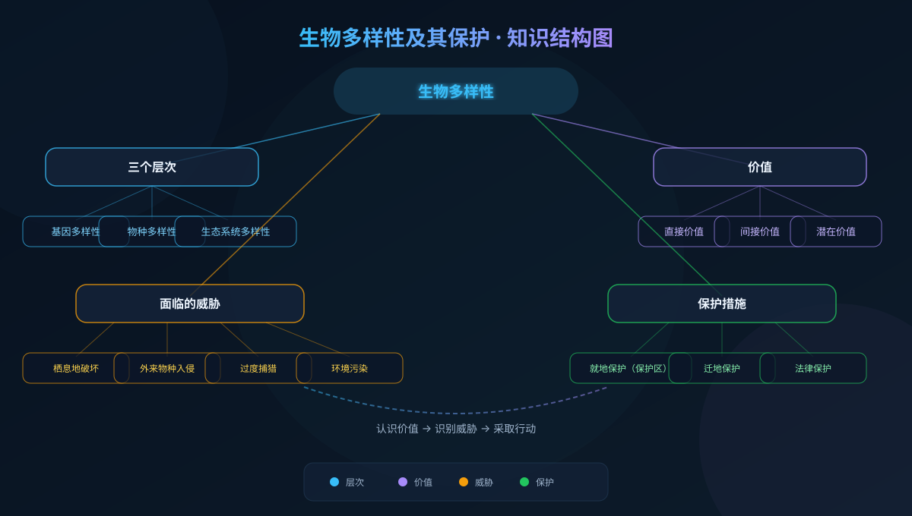
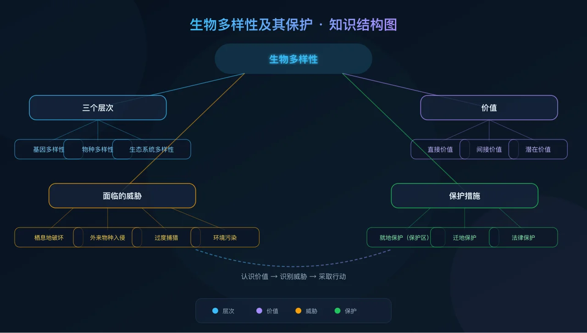
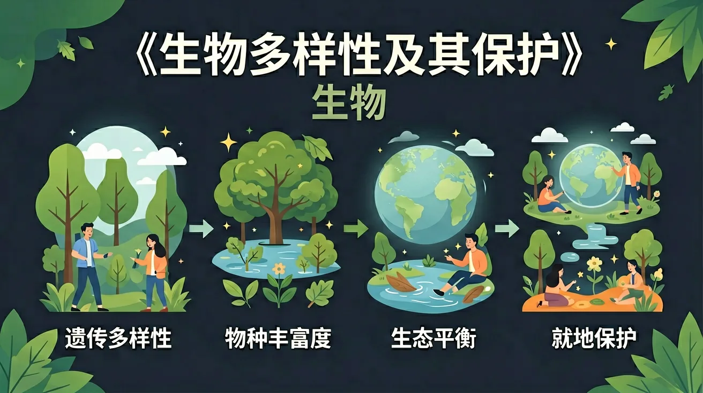

Interactive Canvas
生态系统稳定性模拟
点击添加或移除物种，观察食物网的稳定性如何变化。物种越少，系统越脆弱！
当前 8 个物种 · 稳定性：高 · 食物网连接：28条
地球上有数百万种生物，但物种正以前所未有的速度消失——我们该如何保护这份生命遗产？

选一个你关心的问题，后面的内容会围绕它展开。
选择或输入后，本课会围绕你的问题展开。
以下哪项最能体现"基因多样性"的含义？
已经知道：地球上有数百万种生物
但是问题是："多样性"具体指什么？只是种类多吗？
所以要解决：认识基因、物种、生态系统三层次
同种生物不同个体的基因组成不同。例：不同品种水稻的抗病基因不同。
地球上生物物种的丰富程度。目前已知约200万种，估计实际超1000万种。
生物群落与无机环境组成的多种生态系统。如森林、湿地、珊瑚礁、荒漠等。
对人类有直接使用价值：食物、药物、工业原料、科研材料等。
生态功能价值：调节气候、涵养水源、保持水土、净化空气等，远大于直接价值。
目前尚未被发现和利用的价值。大量物种的功能人类还不了解。
最主要原因。砍伐森林、围湖造田、城市扩张使物种失去生存环境。
引入的外来种缺乏天敌，大量繁殖挤占本地物种生存空间。如水葫芦。
过度捕捞、盗猎使许多物种数量急剧减少甚至灭绝。
水污染、大气污染、土壤污染破坏生物生存条件。
某地引入一种外来植物用于绿化，以下分析最合理的是：
已经知道：生物多样性正受到严重威胁
但是问题是：怎样才能有效保护？
所以要掌握：就地保护、迁地保护、法律保护三大策略
建立自然保护区，保护生物及栖息地。中国已建超2700个自然保护区。
将濒危物种迁至动物园、植物园、基因库中保护和繁殖。如大熊猫繁殖基地。
制定法律法规禁止乱捕滥猎。如《野生动物保护法》《濒危野生动植物种国际贸易公约》。
点击添加或移除物种，观察食物网的稳定性如何变化。物种越少，系统越脆弱！
观察不同环境压力下物种如何适应和灭绝，理解自然选择与生物多样性的关系。
错："保护就是不能利用"
对：合理利用也是保护方式之一
错："保护多样性只需保护大熊猫"
对：所有物种（含植物微生物）都要保护
错："外来种一定会入侵"
对：需科学评估，非都有害
错："生物多样性就是物种多"
对：含基因、物种、生态系统三层次
填空：保护生物多样性最有效的措施是建立____。
某地引入食人鲳后本地鱼类减少，分析原因并提出对策。
为你的学校设计一份"校园生物多样性调查与保护方案"，说明调查方法、保护建议和预期效果。
某珍稀植物野外仅存20株且基因高度相似，最大的风险是：
生物多样性是地球46亿年进化的结晶，一旦丧失不可逆转。
先独立作答，再点选项查看对错与错因。
下列哪项不属于生物多样性的层次？
保护生物多样性最有效的措施是：
下列哪项是人类活动导致生物多样性减少的主要原因？
生物多样性包括____多样性、____多样性和____多样性三个层次。
答案：遗传,物种,生态系统
生物多样性包括遗传多样性(基因层面)、物种多样性(物种层面)和生态系统多样性(系统层面)三个层次。
我国建立的____自然保护区主要保护大熊猫及其栖息地。
答案：卧龙
四川卧龙国家级自然保护区是我国最重要的保护大熊猫的自然保护区。
关于生物多样性的价值，下列说法正确的是：
调查校园内不同区域的动植物种类和数量，分析生物多样性状况
❓ 为什么保护大熊猫比保护蚊子更重要？
❓ 动物园的老虎还算生物多样性吗？
❓ 我家小区种了好多外来植物，这样算破坏生物多样性吗？
学完这一课，这些问题你都能自信地回答。
生物多样性=基因+物种+生态系统多样性，像拼积木的三层结构
杂交水稻利用基因多样性，就像用不同乐高块组合出新模型
动物园保护vs自然保护区：前者保物种，后者保生态关系
观察校园树木：樟树(本地种)和紫薇(外来种)对昆虫的影响不同
设计城市绿化时，应优先选择本地植物维持生态网稳定性
✅ 杂交是自然育种方式，转基因需实验室基因操作
💡 混淆传统育种与现代生物技术
✅ 需同时满足：1.无天敌 2.繁殖快 3.挤占本地种资源
💡 忽视生物入侵的判定标准
口诀：基因物种生态系统，三层保护不能少
类比：生物多样性像WiFi信号：基因是密码，物种是设备，生态系统是网络

